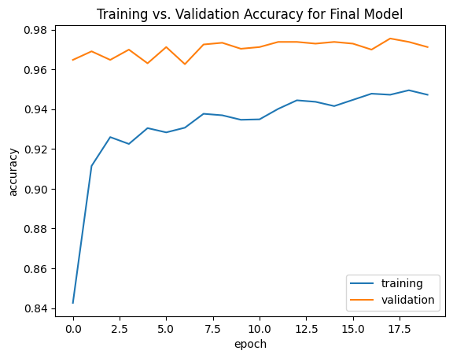

import os
import keras
from keras import utils
import tensorflow_datasets as tfds
import matplotlib.pyplot as plt
import os
os.environ["KERAS_BACKEND"] = "tensorflow"
import keras
from keras import datasets, layers, models
import tensorflow as tfThis blog post will outline my completion of PIC 16B Homework 5. I will describe the creation of an image classification machine learning model that can distinguish between images of cats and dogs.
1. Load Packages and Obtain Data
- First, we import all the necessary packages to acquire the data and complete the models.
- We load in the data. This is a dataset from Kaggle that contains images of cats and dogs.
- The block of code below created training, validation, and testing datasets.
train_ds, validation_ds, test_ds = tfds.load(
"cats_vs_dogs",
# 40% for training, 10% for validation, and 10% for test (the rest unused)
split=["train[:40%]", "train[40%:50%]", "train[50%:60%]"],
as_supervised=True, # Include labels
)
print(f"Number of training samples: {train_ds.cardinality()}")
print(f"Number of validation samples: {validation_ds.cardinality()}")
print(f"Number of test samples: {test_ds.cardinality()}")Downloading and preparing dataset 786.67 MiB (download: 786.67 MiB, generated: 1.04 GiB, total: 1.81 GiB) to /root/tensorflow_datasets/cats_vs_dogs/4.0.1...
Dataset cats_vs_dogs downloaded and prepared to /root/tensorflow_datasets/cats_vs_dogs/4.0.1. Subsequent calls will reuse this data.
Number of training samples: 9305
Number of validation samples: 2326
Number of test samples: 2326WARNING:absl:1738 images were corrupted and were skipped- We now have the necessary data, so we need to clean it.
- The dataset contains images of different sizes, so we resize them to a fixed size of 150x150. This is done below.
resize_fn = keras.layers.Resizing(150, 150)
train_ds = train_ds.map(lambda x, y: (resize_fn(x), y))
validation_ds = validation_ds.map(lambda x, y: (resize_fn(x), y))
test_ds = test_ds.map(lambda x, y: (resize_fn(x), y))- We are now interested in rapidly reading in the data.
- This process is outlined in the code below.
from tensorflow import data as tf_data
batch_size = 64
train_ds = train_ds.batch(batch_size).prefetch(tf_data.AUTOTUNE).cache()
validation_ds = validation_ds.batch(batch_size).prefetch(tf_data.AUTOTUNE).cache()
test_ds = test_ds.batch(batch_size).prefetch(tf_data.AUTOTUNE).cache()- We now want a way to visualize the data. The below function will take in a dataset and output 3 random cat images and 3 random dog images from the dataset.
def two_row_viz(ds):
# initialize lists to store dog and cat pictures
cat_images = []
dog_images = []
# loop through the images and labels of the first 32 images in the dataset
for image, label in train_ds.take(1):
# loop through the indices of the first image
for i in range(len(image)):
if label[i] == 0: # if the image is a cat
cat_images.append(image[i])
else: # if the image is a dog
dog_images.append(image[i])
# if we already have 3 cat images and 3 dog images
if len(cat_images) >= 3 and len(dog_images) >= 3:
break
# loop through 0-2 and plot 3 cats
for i in range(3):
plt.subplot(2, 3, i+1)
plt.imshow(cat_images[i].numpy().astype("uint8"))
plt.title("Cat")
plt.axis("off")
# loop through 0-2 and plot 3 dogs
for i in range(3):
plt.subplot(2, 3, i+4)
plt.imshow(dog_images[i].numpy().astype("uint8"))
plt.title("Dog")
plt.axis("off")
plt.show()- We will test this function on our training dataset, which is shown below.
two_row_viz(train_ds)
- As we can see, the function gives labelled images of 3 cats and 3 dogs from the dataset, as intended.
- We now want to check the proportion of cat and dog images in the dataset. We will measure our model accuracy on these numbers.
- The calculation of these values is shown below.
labels_iterator= train_ds.unbatch().map(lambda image, label: label).as_numpy_iterator()
dogs = 0
cats = 0
# loop through each image label in the data
for i in labels_iterator:
if i == 1:
dogs += 1
if i == 0:
cats += 1
print("Proportion of dogs: ", dogs / (cats + dogs))
print("Proportion of cats: ", cats / (dogs + cats))Proportion of dogs: 0.5016657710908113
Proportion of cats: 0.4983342289091886- The baseline model would be only guessing dog for every input and it would be 50.17% accurate. Our models should be at least more accurate than this.
2. First Model
- We will begin to test models using keras.Sequential with different layers to try to differentiate between images of cats and dogs in the data.
- The first of these models is created here. We use 12 different layers in the first model.
model1 = models.Sequential([
layers.Input((150, 150, 3)),
layers.Conv2D(32, (3, 3), activation='relu'),
layers.MaxPooling2D((3, 3)),
layers.Conv2D(32, (3, 3), activation='relu'),
layers.MaxPooling2D((3, 3)),
layers.Conv2D(32, (3, 3), activation='relu'),
layers.MaxPooling2D((3, 3)),
layers.Conv2D(32, (3, 3), activation='relu'),
layers.Dropout(0.1), # prevent overfitting
layers.Flatten(),
layers.Dense(64, activation='relu'),
layers.Dense(2) # number of classes
])
model1.summary()Model: "sequential_13"
_________________________________________________________________
Layer (type) Output Shape Param #
=================================================================
conv2d_37 (Conv2D) (None, 148, 148, 32) 896
max_pooling2d_27 (MaxPooli (None, 49, 49, 32) 0
ng2D)
conv2d_38 (Conv2D) (None, 47, 47, 32) 9248
max_pooling2d_28 (MaxPooli (None, 15, 15, 32) 0
ng2D)
conv2d_39 (Conv2D) (None, 13, 13, 32) 9248
max_pooling2d_29 (MaxPooli (None, 4, 4, 32) 0
ng2D)
conv2d_40 (Conv2D) (None, 2, 2, 32) 9248
dropout_11 (Dropout) (None, 2, 2, 32) 0
flatten_10 (Flatten) (None, 128) 0
dense_21 (Dense) (None, 64) 8256
dense_22 (Dense) (None, 2) 130
=================================================================
Total params: 37026 (144.63 KB)
Trainable params: 37026 (144.63 KB)
Non-trainable params: 0 (0.00 Byte)
_________________________________________________________________- As we can see in the model summary, each of the levels serves a specific purpose in the categorization of images.
- We will now compile the model using the ‘adam’ optimizer, the SparseCategoricalCrossentropy loss function, and ‘accuracy’ metric. This process is outlined below.
model1.compile(optimizer='adam',
loss=keras.losses.SparseCategoricalCrossentropy(from_logits=True),
metrics=['accuracy'])- Now that the model is compiled, we can begin to train the model.
- We will use 20 epochs along with the training dataset to train the model, and we will use the validation dataset to assess the model accuracy.
- This process is shown below.
history1 = model1.fit(train_ds, epochs=20, validation_data = validation_ds, verbose = 1)Epoch 1/20
146/146 [==============================] - 7s 31ms/step - loss: 1.3443 - accuracy: 0.5202 - val_loss: 0.6830 - val_accuracy: 0.5825
Epoch 2/20
146/146 [==============================] - 4s 29ms/step - loss: 0.6797 - accuracy: 0.5716 - val_loss: 0.6836 - val_accuracy: 0.5808
Epoch 3/20
146/146 [==============================] - 4s 30ms/step - loss: 0.6592 - accuracy: 0.6070 - val_loss: 0.6504 - val_accuracy: 0.6264
Epoch 4/20
146/146 [==============================] - 4s 29ms/step - loss: 0.6386 - accuracy: 0.6395 - val_loss: 0.6245 - val_accuracy: 0.6509
Epoch 5/20
146/146 [==============================] - 4s 30ms/step - loss: 0.6142 - accuracy: 0.6630 - val_loss: 0.6232 - val_accuracy: 0.6496
Epoch 6/20
146/146 [==============================] - 4s 30ms/step - loss: 0.6053 - accuracy: 0.6694 - val_loss: 0.6036 - val_accuracy: 0.6707
Epoch 7/20
146/146 [==============================] - 4s 29ms/step - loss: 0.5768 - accuracy: 0.6951 - val_loss: 0.5605 - val_accuracy: 0.7089
Epoch 8/20
146/146 [==============================] - 4s 30ms/step - loss: 0.5552 - accuracy: 0.7151 - val_loss: 0.5580 - val_accuracy: 0.7120
Epoch 9/20
146/146 [==============================] - 4s 30ms/step - loss: 0.5380 - accuracy: 0.7303 - val_loss: 0.5508 - val_accuracy: 0.7206
Epoch 10/20
146/146 [==============================] - 4s 29ms/step - loss: 0.5265 - accuracy: 0.7416 - val_loss: 0.5536 - val_accuracy: 0.7175
Epoch 11/20
146/146 [==============================] - 4s 31ms/step - loss: 0.5085 - accuracy: 0.7528 - val_loss: 0.5363 - val_accuracy: 0.7231
Epoch 12/20
146/146 [==============================] - 4s 29ms/step - loss: 0.4831 - accuracy: 0.7730 - val_loss: 0.5191 - val_accuracy: 0.7511
Epoch 13/20
146/146 [==============================] - 4s 30ms/step - loss: 0.4780 - accuracy: 0.7725 - val_loss: 0.4957 - val_accuracy: 0.7648
Epoch 14/20
146/146 [==============================] - 4s 29ms/step - loss: 0.4634 - accuracy: 0.7830 - val_loss: 0.5305 - val_accuracy: 0.7472
Epoch 15/20
146/146 [==============================] - 4s 29ms/step - loss: 0.4432 - accuracy: 0.7900 - val_loss: 0.5098 - val_accuracy: 0.7678
Epoch 16/20
146/146 [==============================] - 4s 30ms/step - loss: 0.4329 - accuracy: 0.7975 - val_loss: 0.4846 - val_accuracy: 0.7730
Epoch 17/20
146/146 [==============================] - 4s 30ms/step - loss: 0.4198 - accuracy: 0.8061 - val_loss: 0.4882 - val_accuracy: 0.7704
Epoch 18/20
146/146 [==============================] - 4s 30ms/step - loss: 0.3978 - accuracy: 0.8161 - val_loss: 0.4752 - val_accuracy: 0.7825
Epoch 19/20
146/146 [==============================] - 4s 30ms/step - loss: 0.3831 - accuracy: 0.8269 - val_loss: 0.4785 - val_accuracy: 0.7764
Epoch 20/20
146/146 [==============================] - 4s 29ms/step - loss: 0.3678 - accuracy: 0.8325 - val_loss: 0.4792 - val_accuracy: 0.7829- This model performs relatively well on the validation dataset.
The accuracy of the model stabilized between 75% and 79% validation accuracy during training. This score is certainly much better than the baseline of 50.17%.
- We will now visualize the difference between the training and validation accuracy of our model.
plt.plot(history1.history["accuracy"], label = "training") # plot training accuracy
plt.plot(history1.history["val_accuracy"], label = "validation")# plot validation accuracy
plt.gca().set(xlabel = "epoch", ylabel = "accuracy")
plt.title("Training vs. Validation Accuracy for Model 1")
plt.legend()- As we can see from the visualization, the training accuracy started to become much higher than the validation accuracy for higher epochs.
- This may be a cause for concern because the validation accuracy being significantly lower than the training accuracy means that there is overfitting in the model.
3. Model with Data Augmentation
- We will continue to test new models. Now we will begin to test data augmentation methods to improve the performance of our model.
- The first of these models is flipping, which we test here.
# create a flip layer
data_flip = tf.keras.Sequential([
layers.RandomFlip('vertical')
])
# loop through some of the training images
for image, _ in train_ds.take(1):
plt.figure()
# select the first trainign image
first_image = image[0]
# display 6 images that are affected by the flip layer
for i in range(6):
ax = plt.subplot(2, 3, i + 1)
augmented_image = data_flip(tf.expand_dims(first_image, 0))
plt.imshow(augmented_image[0] / 255)
plt.axis('off')- As we can see, the flipping is successful on the images of the dog.
- We will now test rotation, which is shown below.
# create a rotation layer
data_rotate = tf.keras.Sequential([
layers.RandomRotation(0.2)
])
# loop through some of our training images
for image, _ in train_ds.take(1):
plt.figure()
# get the first training image
first_image = image[0]
# display 6 images that are affected by the rotation layer
for i in range(6):
ax = plt.subplot(2, 3, i + 1)
augmented_image = data_rotate(tf.expand_dims(first_image, 0))
plt.imshow(augmented_image[0] / 255)
plt.axis('off')- The rotation layer is successful, as shown above.
- We will now add these two data augmentation layers to the beginning of our model. We now have 14 layers in total, as shown below.
model2 = models.Sequential([
layers.Input((150, 150, 3)),
layers.RandomFlip('vertical'), # vertical flip
layers.RandomRotation(0.2), # rotation
layers.Conv2D(32, (3, 3), activation='relu'),
layers.MaxPooling2D((3, 3)),
layers.Conv2D(32, (3, 3), activation='relu'),
layers.MaxPooling2D((3, 3)),
layers.Conv2D(32, (3, 3), activation='relu'),
layers.MaxPooling2D((3, 3)),
layers.Conv2D(32, (3, 3), activation='relu'),
layers.Dropout(0.1), # prevents overfitting
layers.Flatten(),
layers.Dense(64, activation='relu'),
layers.Dense(2) # number of classes
])
model2.summary()Model: "sequential_16"
_________________________________________________________________
Layer (type) Output Shape Param #
=================================================================
random_flip_11 (RandomFlip (None, 150, 150, 3) 0
)
random_rotation_11 (Random (None, 150, 150, 3) 0
Rotation)
conv2d_41 (Conv2D) (None, 148, 148, 32) 896
max_pooling2d_30 (MaxPooli (None, 49, 49, 32) 0
ng2D)
conv2d_42 (Conv2D) (None, 47, 47, 32) 9248
max_pooling2d_31 (MaxPooli (None, 15, 15, 32) 0
ng2D)
conv2d_43 (Conv2D) (None, 13, 13, 32) 9248
max_pooling2d_32 (MaxPooli (None, 4, 4, 32) 0
ng2D)
conv2d_44 (Conv2D) (None, 2, 2, 32) 9248
dropout_12 (Dropout) (None, 2, 2, 32) 0
flatten_11 (Flatten) (None, 128) 0
dense_23 (Dense) (None, 64) 8256
dense_24 (Dense) (None, 2) 130
=================================================================
Total params: 37026 (144.63 KB)
Trainable params: 37026 (144.63 KB)
Non-trainable params: 0 (0.00 Byte)
_________________________________________________________________- As we can see, the flip and rotation layers have been successfully added to the model along with all the other layers from before.
- We will now compile the model using the same optimizer, loss, and metrics as before.
model2.compile(optimizer='adam',
loss=keras.losses.SparseCategoricalCrossentropy(from_logits=True),
metrics=['accuracy'])- Now that our second model is compiled, we will train the model using the same training dataset from before and 20 epochs.
history2 = model2.fit(train_ds,
epochs=20,
validation_data = validation_ds,
verbose = 1)Epoch 1/20
146/146 [==============================] - 8s 39ms/step - loss: 0.8887 - accuracy: 0.5379 - val_loss: 0.6821 - val_accuracy: 0.5684
Epoch 2/20
146/146 [==============================] - 4s 30ms/step - loss: 0.6923 - accuracy: 0.5362 - val_loss: 0.6884 - val_accuracy: 0.5413
Epoch 3/20
146/146 [==============================] - 4s 29ms/step - loss: 0.6802 - accuracy: 0.5600 - val_loss: 0.6815 - val_accuracy: 0.5245
Epoch 4/20
146/146 [==============================] - 4s 29ms/step - loss: 0.6513 - accuracy: 0.6107 - val_loss: 0.6630 - val_accuracy: 0.5942
Epoch 5/20
146/146 [==============================] - 4s 29ms/step - loss: 0.6258 - accuracy: 0.6476 - val_loss: 0.5975 - val_accuracy: 0.6801
Epoch 6/20
146/146 [==============================] - 4s 28ms/step - loss: 0.6046 - accuracy: 0.6748 - val_loss: 0.5976 - val_accuracy: 0.6862
Epoch 7/20
146/146 [==============================] - 4s 28ms/step - loss: 0.5930 - accuracy: 0.6806 - val_loss: 0.5829 - val_accuracy: 0.6935
Epoch 8/20
146/146 [==============================] - 4s 29ms/step - loss: 0.5740 - accuracy: 0.7012 - val_loss: 0.5779 - val_accuracy: 0.6999
Epoch 9/20
146/146 [==============================] - 4s 28ms/step - loss: 0.5774 - accuracy: 0.7013 - val_loss: 0.5597 - val_accuracy: 0.7107
Epoch 10/20
146/146 [==============================] - 4s 29ms/step - loss: 0.5640 - accuracy: 0.7085 - val_loss: 0.5611 - val_accuracy: 0.7197
Epoch 11/20
146/146 [==============================] - 4s 28ms/step - loss: 0.5530 - accuracy: 0.7170 - val_loss: 0.5399 - val_accuracy: 0.7347
Epoch 12/20
146/146 [==============================] - 4s 28ms/step - loss: 0.5469 - accuracy: 0.7215 - val_loss: 0.5450 - val_accuracy: 0.7283
Epoch 13/20
146/146 [==============================] - 4s 29ms/step - loss: 0.5362 - accuracy: 0.7343 - val_loss: 0.5188 - val_accuracy: 0.7442
Epoch 14/20
146/146 [==============================] - 4s 30ms/step - loss: 0.5299 - accuracy: 0.7339 - val_loss: 0.5002 - val_accuracy: 0.7597
Epoch 15/20
146/146 [==============================] - 4s 29ms/step - loss: 0.5262 - accuracy: 0.7392 - val_loss: 0.5102 - val_accuracy: 0.7610
Epoch 16/20
146/146 [==============================] - 4s 29ms/step - loss: 0.5193 - accuracy: 0.7416 - val_loss: 0.4768 - val_accuracy: 0.7674
Epoch 17/20
146/146 [==============================] - 4s 30ms/step - loss: 0.5151 - accuracy: 0.7416 - val_loss: 0.5208 - val_accuracy: 0.7425
Epoch 18/20
146/146 [==============================] - 4s 29ms/step - loss: 0.4949 - accuracy: 0.7632 - val_loss: 0.5159 - val_accuracy: 0.7485
Epoch 19/20
146/146 [==============================] - 4s 28ms/step - loss: 0.5003 - accuracy: 0.7570 - val_loss: 0.5023 - val_accuracy: 0.7485
Epoch 20/20
146/146 [==============================] - 4s 28ms/step - loss: 0.4865 - accuracy: 0.7707 - val_loss: 0.4947 - val_accuracy: 0.7696- The model is now fully trained, with accuracy and validation accuracy shown above.
The accuracy of the model stabilized between 73% and 77% validation accuracy during training. This score is actually worse than our score from before, but not by much. This may be due to the fact that the validation images are very similar to the training images, so the flipping and rotations hurt the validation accuracy of the model.
- We will now visualize the difference between the training and validation accuracy of our model.
plt.plot(history2.history["accuracy"], label = "training") # plot training accuracy
plt.plot(history2.history["val_accuracy"], label = "validation") # plot validation accuracy
plt.gca().set(xlabel = "epoch", ylabel = "accuracy")
plt.title("Training vs. Validation Accuracy for Model 2")
plt.legend()- This is much better than the graph for our first model. The training and validation accuracy is almost the exact same for every epoch, which indicates that there is no overfitting.
- This is due to the fact that some of the images in the training data were flipped and rotated, so the model is less likely to overfit for those images.
4. Data Preprocessing
- We will now create a preprocessing layer for our model that will scale the data and make it more “useable” for our model.
- The code for this layer is shown below.
i = keras.Input(shape=(150, 150, 3))
# The pixel values have the range of (0, 255), but many models will work better if rescaled to (-1, 1.)
# outputs: `(inputs * scale) + offset`
scale_layer = keras.layers.Rescaling(scale=1 / 127.5, offset=-1)
x = scale_layer(i)
preprocessor = keras.Model(inputs = [i], outputs = [x])- We will now add this preprocessing layer to the beginning of our model. We now have 15 layers in total, as shown below.
model3 = models.Sequential([
layers.Input((150, 150, 3)),
preprocessor,
layers.RandomFlip('vertical'), # vertical flip
layers.RandomRotation(0.2), # rotation
layers.Conv2D(32, (3, 3), activation='relu'),
layers.MaxPooling2D((3, 3)),
layers.Conv2D(32, (3, 3), activation='relu'),
layers.MaxPooling2D((3, 3)),
layers.Conv2D(32, (3, 3), activation='relu'),
layers.MaxPooling2D((3, 3)),
layers.Conv2D(32, (3, 3), activation='relu'),
layers.Dropout(0.1), # prevents overfitting
layers.Flatten(),
layers.Dense(64, activation='relu'),
layers.Dense(2) # number of classes
])
model3.summary()Model: "sequential"
_________________________________________________________________
Layer (type) Output Shape Param #
=================================================================
model (Functional) (None, 150, 150, 3) 0
random_flip (RandomFlip) (None, 150, 150, 3) 0
random_rotation (RandomRot (None, 150, 150, 3) 0
ation)
conv2d (Conv2D) (None, 148, 148, 32) 896
max_pooling2d (MaxPooling2 (None, 49, 49, 32) 0
D)
conv2d_1 (Conv2D) (None, 47, 47, 32) 9248
max_pooling2d_1 (MaxPoolin (None, 15, 15, 32) 0
g2D)
conv2d_2 (Conv2D) (None, 13, 13, 32) 9248
max_pooling2d_2 (MaxPoolin (None, 4, 4, 32) 0
g2D)
conv2d_3 (Conv2D) (None, 2, 2, 32) 9248
dropout (Dropout) (None, 2, 2, 32) 0
flatten (Flatten) (None, 128) 0
dense (Dense) (None, 64) 8256
dense_1 (Dense) (None, 2) 130
=================================================================
Total params: 37026 (144.63 KB)
Trainable params: 37026 (144.63 KB)
Non-trainable params: 0 (0.00 Byte)
_________________________________________________________________- As we can see, the preprocessing layer has been successfully added to the model along with all the other layers from before.
- We will now compile the model using the same optimizer, loss, and metrics as before.
model3.compile(optimizer='adam',
loss=keras.losses.SparseCategoricalCrossentropy(from_logits=True),
metrics=['accuracy'])- Now that our third model is compiled, we will train the model using the same training dataset from before and 20 epochs.
history3 = model3.fit(train_ds,
epochs=20,
validation_data = validation_ds,
verbose = 1)Epoch 1/20
146/146 [==============================] - 15s 55ms/step - loss: 0.6754 - accuracy: 0.5761 - val_loss: 0.6326 - val_accuracy: 0.6445
Epoch 2/20
146/146 [==============================] - 5s 32ms/step - loss: 0.6116 - accuracy: 0.6634 - val_loss: 0.5767 - val_accuracy: 0.7085
Epoch 3/20
146/146 [==============================] - 5s 31ms/step - loss: 0.5738 - accuracy: 0.7031 - val_loss: 0.5447 - val_accuracy: 0.7240
Epoch 4/20
146/146 [==============================] - 5s 32ms/step - loss: 0.5625 - accuracy: 0.7059 - val_loss: 0.5186 - val_accuracy: 0.7425
Epoch 5/20
146/146 [==============================] - 5s 34ms/step - loss: 0.5317 - accuracy: 0.7338 - val_loss: 0.5166 - val_accuracy: 0.7455
Epoch 6/20
146/146 [==============================] - 4s 31ms/step - loss: 0.5165 - accuracy: 0.7447 - val_loss: 0.4928 - val_accuracy: 0.7575
Epoch 7/20
146/146 [==============================] - 5s 32ms/step - loss: 0.5088 - accuracy: 0.7512 - val_loss: 0.4807 - val_accuracy: 0.7696
Epoch 8/20
146/146 [==============================] - 4s 30ms/step - loss: 0.4929 - accuracy: 0.7584 - val_loss: 0.4794 - val_accuracy: 0.7721
Epoch 9/20
146/146 [==============================] - 5s 31ms/step - loss: 0.4859 - accuracy: 0.7644 - val_loss: 0.4792 - val_accuracy: 0.7700
Epoch 10/20
146/146 [==============================] - 4s 31ms/step - loss: 0.4754 - accuracy: 0.7703 - val_loss: 0.4651 - val_accuracy: 0.7829
Epoch 11/20
146/146 [==============================] - 4s 31ms/step - loss: 0.4711 - accuracy: 0.7756 - val_loss: 0.4512 - val_accuracy: 0.7915
Epoch 12/20
146/146 [==============================] - 5s 32ms/step - loss: 0.4548 - accuracy: 0.7847 - val_loss: 0.4406 - val_accuracy: 0.8009
Epoch 13/20
146/146 [==============================] - 4s 31ms/step - loss: 0.4507 - accuracy: 0.7844 - val_loss: 0.4394 - val_accuracy: 0.7997
Epoch 14/20
146/146 [==============================] - 5s 31ms/step - loss: 0.4395 - accuracy: 0.7962 - val_loss: 0.4410 - val_accuracy: 0.7928
Epoch 15/20
146/146 [==============================] - 5s 31ms/step - loss: 0.4310 - accuracy: 0.7988 - val_loss: 0.4432 - val_accuracy: 0.8001
Epoch 16/20
146/146 [==============================] - 4s 30ms/step - loss: 0.4282 - accuracy: 0.7997 - val_loss: 0.4445 - val_accuracy: 0.7971
Epoch 17/20
146/146 [==============================] - 5s 31ms/step - loss: 0.4154 - accuracy: 0.8053 - val_loss: 0.4367 - val_accuracy: 0.8048
Epoch 18/20
146/146 [==============================] - 4s 31ms/step - loss: 0.4196 - accuracy: 0.8044 - val_loss: 0.4198 - val_accuracy: 0.8065
Epoch 19/20
146/146 [==============================] - 5s 31ms/step - loss: 0.4086 - accuracy: 0.8136 - val_loss: 0.4188 - val_accuracy: 0.8113
Epoch 20/20
146/146 [==============================] - 5s 31ms/step - loss: 0.4048 - accuracy: 0.8142 - val_loss: 0.4180 - val_accuracy: 0.8061- The model is now fully trained, with accuracy and validation accuracy shown above.
The accuracy of the model stabilized between 80% and 82% validation accuracy during training. This score is better than our acuracy from part 1 by about 5%, which is certainly substantial. This is likely due to the fact that the preprocessing layer made the data more suitable for training the model.
- We will now visualize the difference between the training and validation accuracy of our model.
plt.plot(history3.history["accuracy"], label = "training") # plot training accuracy
plt.plot(history3.history["val_accuracy"], label = "validation") # plot validation accuracy
plt.gca().set(xlabel = "epoch", ylabel = "accuracy")
plt.title("Training vs. Validation Accuracy for Model 3")
plt.legend()- Similar to model 2, the training and validation accuracy is almost the exact same for every epoch, which indicates that there is no overfitting.
- Again, this is due to the fact that some of the images in the training data were flipped and rotated, so the model is less likely to overfit for those images. Also, the dropout layer will cause less overfitting.
5. Transfer Learning
- We will now access a pre-existing “base model” to incorporate into our full model to improve pattern recognition.
- The code for the layer created from this base model is shown below.
IMG_SHAPE = (150, 150, 3)
base_model = keras.applications.MobileNetV3Large(include_top=False,
input_shape=IMG_SHAPE,
weights='imagenet')
base_model.trainable = False
i = keras.Input(shape=IMG_SHAPE)
x = base_model(i, training = False)
base_model_layer = keras.Model(inputs = i, outputs = x)
#base_model.summary()/Users/trentbellinger/anaconda3/envs/PIC16B-24W/lib/python3.11/site-packages/keras/src/applications/mobilenet_v3.py:512: UserWarning: `input_shape` is undefined or non-square, or `rows` is not 224. Weights for input shape (224, 224) will be loaded as the default.
return MobileNetV3(Downloading data from https://storage.googleapis.com/tensorflow/keras-applications/mobilenet_v3/weights_mobilenet_v3_large_224_1.0_float_no_top_v2.h5
12683000/12683000 ━━━━━━━━━━━━━━━━━━━━ 0s 0us/step- Looking at the summary of the base model above, we can see that it is incredibly complex, containing over 200 layers and 2996352 parameters. (I omitted the output of the summary() function because it was too large to put in the blog post.) These parameters will have to be trained in our model.
- We will now add this “base model” layer and create a new model. This model only has 6 layers that we have created, as shown below.
model4 = models.Sequential([
layers.Input((150, 150, 3)),
layers.RandomFlip('vertical'), # vertical flip
layers.RandomRotation(0.2), # rotation
base_model_layer,
layers.Flatten(),
layers.Dense(2) # number of classes
])
model4.summary()Model: "sequential_2"
_________________________________________________________________
Layer (type) Output Shape Param #
=================================================================
random_flip_2 (RandomFlip) (None, 150, 150, 3) 0
random_rotation_2 (RandomR (None, 150, 150, 3) 0
otation)
model (Functional) (None, 5, 5, 960) 2996352
flatten_2 (Flatten) (None, 24000) 0
dense_2 (Dense) (None, 2) 48002
=================================================================
Total params: 3044354 (11.61 MB)
Trainable params: 48002 (187.51 KB)
Non-trainable params: 2996352 (11.43 MB)
_________________________________________________________________- As we can see, the base model layer has been successfully added to the model along with all the other layers from before.
- We have 3044354 parameters: 48002 trainable and 2996352 non-trainable.
- We will now compile the model using the same optimizer, loss, and metrics as before.
model4.compile(optimizer='adam',
loss=keras.losses.SparseCategoricalCrossentropy(from_logits=True),
metrics=['accuracy'])- Now that our third model is compiled, we will train the model using the same training dataset from before and 20 epochs.
history4 = model4.fit(train_ds,
epochs=20,
validation_data = validation_ds,
verbose = 1)Epoch 1/20
146/146 [==============================] - 9s 61ms/step - loss: 0.6571 - accuracy: 0.8983 - val_loss: 0.3337 - val_accuracy: 0.9557
Epoch 2/20
146/146 [==============================] - 6s 42ms/step - loss: 0.6315 - accuracy: 0.9132 - val_loss: 0.3038 - val_accuracy: 0.9609
Epoch 3/20
146/146 [==============================] - 6s 43ms/step - loss: 0.6332 - accuracy: 0.9225 - val_loss: 0.6423 - val_accuracy: 0.9342
Epoch 4/20
146/146 [==============================] - 6s 44ms/step - loss: 0.7692 - accuracy: 0.9220 - val_loss: 0.6369 - val_accuracy: 0.9445
Epoch 5/20
146/146 [==============================] - 6s 42ms/step - loss: 0.7106 - accuracy: 0.9297 - val_loss: 0.4238 - val_accuracy: 0.9639
Epoch 6/20
146/146 [==============================] - 6s 44ms/step - loss: 0.6824 - accuracy: 0.9337 - val_loss: 0.5350 - val_accuracy: 0.9596
Epoch 7/20
146/146 [==============================] - 6s 43ms/step - loss: 0.6091 - accuracy: 0.9389 - val_loss: 0.4862 - val_accuracy: 0.9553
Epoch 8/20
146/146 [==============================] - 6s 43ms/step - loss: 0.6887 - accuracy: 0.9372 - val_loss: 0.5783 - val_accuracy: 0.9579
Epoch 9/20
146/146 [==============================] - 6s 43ms/step - loss: 0.6023 - accuracy: 0.9442 - val_loss: 0.6562 - val_accuracy: 0.9536
Epoch 10/20
146/146 [==============================] - 6s 43ms/step - loss: 0.6907 - accuracy: 0.9408 - val_loss: 0.4567 - val_accuracy: 0.9682
Epoch 11/20
146/146 [==============================] - 6s 43ms/step - loss: 0.6255 - accuracy: 0.9454 - val_loss: 0.5385 - val_accuracy: 0.9579
Epoch 12/20
146/146 [==============================] - 6s 43ms/step - loss: 0.5803 - accuracy: 0.9492 - val_loss: 0.5285 - val_accuracy: 0.9626
Epoch 13/20
146/146 [==============================] - 6s 43ms/step - loss: 0.5478 - accuracy: 0.9484 - val_loss: 0.5553 - val_accuracy: 0.9626
Epoch 14/20
146/146 [==============================] - 6s 43ms/step - loss: 0.5283 - accuracy: 0.9536 - val_loss: 0.5785 - val_accuracy: 0.9647
Epoch 15/20
146/146 [==============================] - 6s 44ms/step - loss: 0.6147 - accuracy: 0.9491 - val_loss: 0.5595 - val_accuracy: 0.9613
Epoch 16/20
146/146 [==============================] - 6s 43ms/step - loss: 0.5943 - accuracy: 0.9470 - val_loss: 0.7062 - val_accuracy: 0.9592
Epoch 17/20
146/146 [==============================] - 6s 44ms/step - loss: 0.5128 - accuracy: 0.9536 - val_loss: 1.0749 - val_accuracy: 0.9488
Epoch 18/20
146/146 [==============================] - 6s 43ms/step - loss: 0.6432 - accuracy: 0.9508 - val_loss: 0.7988 - val_accuracy: 0.9566
Epoch 19/20
146/146 [==============================] - 6s 44ms/step - loss: 0.6393 - accuracy: 0.9512 - val_loss: 0.7023 - val_accuracy: 0.9622
Epoch 20/20
146/146 [==============================] - 6s 44ms/step - loss: 0.5399 - accuracy: 0.9537 - val_loss: 0.6307 - val_accuracy: 0.9617- The model is now fully trained, with accuracy and validation accuracy shown above.
The accuracy of the model stabilized between 95% and 97% validation accuracy during training. This score is significantly better than our score in model 1. In fact, it is almost perfect. The base model layer has clearly had a positive impact on our model.
- We will now visualize the difference between the training and validation accuracy of our model.
plt.plot(history4.history["accuracy"], label = "training") # plot training accuracy
plt.plot(history4.history["val_accuracy"], label = "validation") # plot validation accuracy
plt.gca().set(xlabel = "epoch", ylabel = "accuracy")
plt.title("Training vs. Validation Accuracy for Model 4")
plt.legend()- It is very interesting to see that the validation accuracy is actually better that the training accuracy for nearly every epoch. This indicates that we do not habve an issue with overfitting.
- The validation acciracy being higher is actually very good because we want the model to be accurate for data outside our training data.
6. Score on Test Data
- We will now attempt to create the best possible model based on the models that we havge created before.
- Model 4 was clearly the best, so we will add a GlobalMaxPooling, Dropout, and Dense layer and see if it does any better.
final_model = models.Sequential([
layers.Input((150, 150, 3)),
layers.RandomFlip('vertical'), # vertical flip
layers.RandomRotation(0.2), # rotation
base_model_layer,
layers.GlobalMaxPooling2D(),
layers.Dropout(0.1), # prevent overfitting
layers.Flatten(),
layers.Dense(64, activation='relu'),
layers.Dense(2) # number of classes
])
final_model.summary()Model: "sequential_5"
_________________________________________________________________
Layer (type) Output Shape Param #
=================================================================
random_flip_6 (RandomFlip) (None, 150, 150, 3) 0
random_rotation_6 (RandomR (None, 150, 150, 3) 0
otation)
model (Functional) (None, 5, 5, 960) 2996352
global_max_pooling2d_1 (Gl (None, 960) 0
obalMaxPooling2D)
dropout_2 (Dropout) (None, 960) 0
flatten_5 (Flatten) (None, 960) 0
dense_7 (Dense) (None, 64) 61504
dense_8 (Dense) (None, 2) 130
=================================================================
Total params: 3057986 (11.67 MB)
Trainable params: 61634 (240.76 KB)
Non-trainable params: 2996352 (11.43 MB)
_________________________________________________________________- As we can see, the extra layers have been successfully added to the model along with all the other layers from before.
- We have 3057986 parameters: 61634 trainable and 2996352 non-trainable.
- We will now compile the model using the same optimizer, loss, and metrics as before.
final_model.compile(optimizer='adam',
loss=keras.losses.SparseCategoricalCrossentropy(from_logits=True),
metrics=['accuracy'])- Now that our third model is compiled, we will train the model using the same training dataset from before and 20 epochs.
final_history = final_model.fit(train_ds,
epochs=20,
validation_data = validation_ds,
verbose = 1)Epoch 1/20
146/146 [==============================] - 13s 50ms/step - loss: 0.8572 - accuracy: 0.8427 - val_loss: 0.0987 - val_accuracy: 0.9647
Epoch 2/20
146/146 [==============================] - 6s 42ms/step - loss: 0.2228 - accuracy: 0.9114 - val_loss: 0.0817 - val_accuracy: 0.9690
Epoch 3/20
146/146 [==============================] - 6s 42ms/step - loss: 0.1864 - accuracy: 0.9260 - val_loss: 0.0985 - val_accuracy: 0.9647
Epoch 4/20
146/146 [==============================] - 6s 42ms/step - loss: 0.1910 - accuracy: 0.9225 - val_loss: 0.0811 - val_accuracy: 0.9699
Epoch 5/20
146/146 [==============================] - 6s 43ms/step - loss: 0.1680 - accuracy: 0.9305 - val_loss: 0.0873 - val_accuracy: 0.9630
Epoch 6/20
146/146 [==============================] - 6s 44ms/step - loss: 0.1712 - accuracy: 0.9283 - val_loss: 0.0834 - val_accuracy: 0.9712
Epoch 7/20
146/146 [==============================] - 7s 45ms/step - loss: 0.1686 - accuracy: 0.9307 - val_loss: 0.0933 - val_accuracy: 0.9626
Epoch 8/20
146/146 [==============================] - 6s 42ms/step - loss: 0.1525 - accuracy: 0.9377 - val_loss: 0.0723 - val_accuracy: 0.9725
Epoch 9/20
146/146 [==============================] - 6s 43ms/step - loss: 0.1513 - accuracy: 0.9369 - val_loss: 0.0795 - val_accuracy: 0.9733
Epoch 10/20
146/146 [==============================] - 6s 43ms/step - loss: 0.1556 - accuracy: 0.9347 - val_loss: 0.0841 - val_accuracy: 0.9703
Epoch 11/20
146/146 [==============================] - 6s 44ms/step - loss: 0.1571 - accuracy: 0.9349 - val_loss: 0.0776 - val_accuracy: 0.9712
Epoch 12/20
146/146 [==============================] - 6s 43ms/step - loss: 0.1516 - accuracy: 0.9401 - val_loss: 0.0729 - val_accuracy: 0.9738
Epoch 13/20
146/146 [==============================] - 6s 44ms/step - loss: 0.1416 - accuracy: 0.9444 - val_loss: 0.0729 - val_accuracy: 0.9738
Epoch 14/20
146/146 [==============================] - 6s 43ms/step - loss: 0.1388 - accuracy: 0.9437 - val_loss: 0.0779 - val_accuracy: 0.9729
Epoch 15/20
146/146 [==============================] - 6s 43ms/step - loss: 0.1402 - accuracy: 0.9415 - val_loss: 0.0748 - val_accuracy: 0.9738
Epoch 16/20
146/146 [==============================] - 6s 44ms/step - loss: 0.1371 - accuracy: 0.9447 - val_loss: 0.0800 - val_accuracy: 0.9729
Epoch 17/20
146/146 [==============================] - 6s 42ms/step - loss: 0.1314 - accuracy: 0.9478 - val_loss: 0.0829 - val_accuracy: 0.9699
Epoch 18/20
146/146 [==============================] - 6s 44ms/step - loss: 0.1309 - accuracy: 0.9472 - val_loss: 0.0731 - val_accuracy: 0.9755
Epoch 19/20
146/146 [==============================] - 6s 42ms/step - loss: 0.1287 - accuracy: 0.9495 - val_loss: 0.0675 - val_accuracy: 0.9738
Epoch 20/20
146/146 [==============================] - 6s 43ms/step - loss: 0.1316 - accuracy: 0.9472 - val_loss: 0.0735 - val_accuracy: 0.9712- The model is now fully trained, with accuracy and validation accuracy shown above.
The accuracy of the model stabilized between 97% and 98% validation accuracy during training. This score is slightly better than our score in model 4. The extra layers have clearly had a positive impact on our model.
- We will now visualize the difference between the training and validation accuracy of our model.
plt.plot(final_history.history["accuracy"], label = "training") # plot traiuning accuracy
plt.plot(final_history.history["val_accuracy"], label = "validation") # plot validation accuracy
plt.gca().set(xlabel = "epoch", ylabel = "accuracy")
plt.title("Training vs. Validation Accuracy for Final Model")
plt.legend()
- SImialr to model 4, we see that the validation accuracy is actually better that the training accuracy for nearly every epoch. This indicates that we do not habve an issue with overfitting.
final_model.evaluate(test_ds)37/37 [==============================] - 6s 141ms/step - loss: 0.1034 - accuracy: 0.9566[0.10335604846477509, 0.9565778374671936]- This model is 95.66% accurate on the test data. This is certainly better than our baseline of 50.17%. The model is very successful in differentiating between images of cats and dogs.